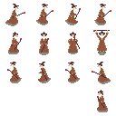
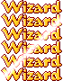

samples / wizard.c¶
#include "cage.h"
#include <string.h>
#include <stdio.h>
#include <stdio.h>
This (still incomplete) sample shows how Cage may be used to write a small 2D game. We begin with defining a few constants that we’ll need to use later on.
static const int BASE_Y = 57;
static float NO_SPEED = 0;
static float BRAKE_SPEED = 0.01f;
static float PREP_SPEED = 0.025f;
static float NORMAL_SPEED = 0.05f;
static float BRAKE_SPEED_L = -0.1f;
static float PREP_SPEED_L = -0.25f;
static float NORMAL_SPEED_L = -0.5f;
{kind=link}
{kind=link}
We use a string to represent the level map. Each character represents a 16x16 pixels tile. Whitespaces are empty tiles, dashes are grass tiles and dots are earth tiles. Our game’s logical size is 196x108 pixels, so we have room for 12x7 tiles of 16x16 pixels.
static const char* LEVEL = " "
" "
" "
" "
" "
"-------------"
".............";
Setting up the Wizard¶
The wizard struct holds the wizard sprite, animations and other state fields that should be kept and managed in-game.
struct wizard {
struct sprite* sprite;
struct animation* walk_right;
struct animation* walk_left;
struct animation* stand;
struct animation* spell;
point pos;
float speed;
};
In this example, the wizard character is created and destroyed within the scope of a single level.
{kind=link}
Creating a wizard means loading the sprite image and creating a sprite with a 32x32 frame size as well as creating the set of animations required to animate the wizard.
Animations can be re-used by any number of sprites, however in this example the animations are an integral part of the wizard data-structure.
Pay attention to the way we define the walking loop cycle. First, we associate the walking speed by using the user-data parameter in __add_frame__. Then, we set the loop sequence __loop_from__ field to the 2nd frame ( index=1 ). This way, the 1st frame ( index=0 ) of the walking animation is used as a transition frame from the standing pose. We also limit the loop to the 5th frame ( index=4 ) allowing the last frame to translate the wizard back into the standing pose.
We finalize with setting the default pose and the initial position.
static void destroy_wizard(struct wizard* wizard);
static struct wizard* create_wizard(void)
{
struct wizard* wizard = calloc(1, sizeof(*wizard));
if (wizard == NULL) goto error;
wizard->sprite = create_sprite(create_image("res/wizard.png"), 32, 32);
if (wizard->sprite == NULL) goto error;
wizard->walk_right = create_animation();
if (wizard->walk_right == NULL) goto error;
add_frame(wizard->walk_right, 4, 200, &PREP_SPEED);
add_frame(wizard->walk_right, 0, 200, &NORMAL_SPEED); /* <------+ */
add_frame(wizard->walk_right, 1, 200, &NORMAL_SPEED); /* | */
add_frame(wizard->walk_right, 2, 200, &NORMAL_SPEED); /* | */
add_frame(wizard->walk_right, 3, 200, &NORMAL_SPEED); /* <--+ | */
add_frame(wizard->walk_right, 4, 200, &BRAKE_SPEED); /* | | */
wizard->walk_right->loop_from = 1; /* --------------------------|---+ */
wizard->walk_right->loop_to = 4; /* --------------------------+ */
wizard->walk_left = create_animation();
if (wizard->walk_left == NULL) goto error;
add_frame(wizard->walk_left, 15, 200, &PREP_SPEED_L);
add_frame(wizard->walk_left, 11, 200, &NORMAL_SPEED_L); /* <------+ */
add_frame(wizard->walk_left, 10, 200, &NORMAL_SPEED_L); /* | */
add_frame(wizard->walk_left, 9, 200, &NORMAL_SPEED_L); /* | */
add_frame(wizard->walk_left, 8, 200, &NORMAL_SPEED_L); /* <--+ | */
add_frame(wizard->walk_left, 15, 200, &BRAKE_SPEED_L); /* | | */
wizard->walk_left->loop_from = 1; /* -----------------------------|---+ */
wizard->walk_left->loop_to = 4; /* -----------------------------+ */
wizard->stand = create_animation();
if (wizard->stand == NULL) goto error;
add_frame(wizard->stand, 5, 100, &NO_SPEED); /* <---+ */
wizard->stand->mode = FREEZE_LAST_FRAME; /* ------------+ */
wizard->spell = create_animation();
if (wizard->spell == NULL) goto error;
add_frame(wizard->spell, 5, 200, &NO_SPEED);
add_frame(wizard->spell, 6, 200, &NO_SPEED);
add_frame(wizard->spell, 7, 100, &NO_SPEED); /* <--+ */
add_frame(wizard->spell, 6, 200, &NO_SPEED); /* | */
wizard->spell->loop_from = 2; /* ----------------------+ */
wizard->spell->loop_to = 2; /* ----------------------+ */
play_animation(wizard->sprite, wizard->stand);
wizard->pos.x = 0;
wizard->pos.y = BASE_Y;
return wizard;
error:
destroy_wizard(wizard);
ERROR("Unable to create wizard");
return NULL;
}
Destroying a wizard means destroying each and every created resource in the create_wizard function. If we fail to do so, we will introduce a memory leak to the game.
static void destroy_wizard(struct wizard* wizard)
{
if (wizard != NULL) {
destroy_animation(wizard->walk_right);
destroy_animation(wizard->spell);
destroy_animation(wizard->stand);
destroy_image(wizard->sprite->image);
destroy_sprite(wizard->sprite);
free(wizard);
}
}
The wizard is controlled using the keyboard (for now). animate_wizard() sets the wizard animation based on the player keypresses and the animation user-data as it was set up in the create_wizard() function.
We use the user-data value as a speed constant. This was setup as part of the animation.
static void animate_wizard(struct wizard* wizard, float elapsed_ms)
{
const void* px;
struct animation* active_anim;
active_anim = key_down(KB_SPACE) ? wizard->spell : key_down(KB_RIGHT)
? wizard->walk_right
: key_down(KB_LEFT)
? wizard->walk_left
: wizard->stand;
play_animation(wizard->sprite, active_anim);
if ((px = animate_sprite(wizard->sprite, elapsed_ms)) != NULL) {
wizard->speed = *((const float*)px);
}
wizard->pos.x += wizard->speed;
}
The Title Effect¶
{kind=link}
At the beginning of the main game state, a title sprite will show up with a shining “bling” effect. game_title struct encapsulate both the sprite and the shine animation.
struct game_title {
struct sprite* sprite;
struct animation* bling;
struct image* mask;
struct image* spot;
};
static int prepare_title(struct game_title* title);
static void cleanup_title(struct game_title* title);
We create a sprite for the title and an animation with 6 frames. We also create a mask image for a spot and fade-in effect.
static int prepare_title(struct game_title* title)
{
int f;
title->sprite = create_sprite(create_image("res/title.png"), 70, 15);
if (title->sprite == NULL) goto error;
title->bling = create_animation();
if (title->bling == NULL) goto error;
add_frame(title->bling, 0, SECOND / 2, NULL);
for (f = 5; f >= 0; f--)
add_frame(title->bling, f, SECOND / 10, NULL);
title->bling->mode = FREEZE_LAST_FRAME;
title->mask = create_target_image(192, 108, color_from_RGB(50, 50, 50));
if (title->mask == NULL) goto error;
set_blend_mode(title->mask, MULTIPLY);
title->spot = create_image("res/spot.png");
if (title->spot == NULL) goto error;
set_blend_mode(title->spot, ADD);
return 0;
error:
ERROR("Unable to prepare title");
cleanup_title(title);
return -1;
}
static void cleanup_title(struct game_title* title)
{
destroy_sprite(title->sprite);
destroy_animation(title->bling);
destroy_image(title->spot);
destroy_image(title->mask);
}
A Decorative Tree¶
I just added another sprite to use as an animated scenery element, for fun..
struct tree {
struct sprite* sprite;
struct animation* windblow;
};
static int prepare_tree(struct tree* tree)
{
tree->sprite = create_sprite(create_image("res/tree.png"), 32, 32);
if (tree->sprite == NULL) goto cleanup_sprite;
tree->windblow = create_animation();
if (tree->windblow == NULL) goto cleanup_animation;
add_frame(tree->windblow, 0, 1 * SECOND, NULL);
add_frame(tree->windblow, 1, 1 * SECOND, NULL);
tree->windblow->loop_from = 0;
tree->windblow->loop_to = 1;
return 0;
cleanup_animation:
destroy_animation(tree->windblow);
cleanup_sprite:
destroy_sprite(tree->sprite);
error:
ERROR("Unable to prepare tree");
return -1;
}
static void cleanup_tree(struct tree* tree)
{
destroy_sprite(tree->sprite);
destroy_animation(tree->windblow);
}
Tying everything together¶
level_data is stored in the state data variable. We populate the state data using the return value of the create state function. The same data pointer is passed back to the update and destory functions. This is the perfect place to store anything we need to work with: characters, sprites, tiles, timelines and the likes.
struct level_data {
struct game_title title;
struct wizard* wizard;
struct image* grass_tile;
struct image* earth_tile;
struct tree tree;
struct timeline* timeline;
struct font* font;
struct sound* music;
};
static struct level_data* create_level_data(void);
static void destroy_level_data(struct level_data* ldata);
slide_title_in(), slide_title_out() and bling_title() are used by the level timeline to animate the title.
We use cosine interpolation to slide the title in and out, creating a smoother effect.
progress will hold a value between 0 to 1 based on the event progess/duration, making it ideal for use with interpolation functions.
static void* before_title_in(void* data, float elapsed_ms, float progress)
{
struct rectangle c = { 0, 0, 192, 108 };
struct rectangle r = { 0, 0, 64, 64 };
struct level_data* ldata = data;
UNUSED(elapsed_ms);
UNUSED(progress);
clear_image(ldata->title.mask, color_from_RGB(0, 0, 0));
draw_on_image(ldata->title.mask);
draw_image(ldata->title.spot, -15, 40, &r, 0);
draw_on_screen();
draw_image(ldata->title.mask, 0, 0, &c, 0);
return NULL;
}
static void* slide_title_in(void* data, float elapsed_ms, float progress)
{
struct rectangle c = { 0, 0, 192, 108 };
struct rectangle r = { 0, 0, 64, 64 };
struct level_data* ldata = data;
UNUSED(elapsed_ms);
clear_image(ldata->title.mask,
color_from_RGB(255 * progress, 255 * progress, 255 * progress));
draw_on_image(ldata->title.mask);
draw_image(ldata->title.spot, -15, 40, &r, 0);
draw_on_screen();
draw_image(ldata->title.mask, 0, 0, &c, 0);
draw_sprite(ldata->title.sprite,
interpolate(-100, 20, progress, circular_ease_out), 10);
return NULL;
}
static void* slide_title_out(void* data, float elapsed_ms, float progress)
{
struct level_data* ldata = data;
UNUSED(elapsed_ms);
draw_sprite(ldata->title.sprite,
interpolate(20, 200, progress, circular_ease_in), 10);
set_volume(ldata->music, clamp(1.0f - progress, 0.2f, 1.0f));
return NULL;
}
static void* bling_title(void* data, float elapsed_ms, float progress)
{
struct level_data* ldata = data;
UNUSED(elapsed_ms);
draw_sprite(ldata->title.sprite, 20, 10);
if (progress < 0.1) play_animation(ldata->title.sprite, ldata->title.bling);
animate_sprite(ldata->title.sprite, elapsed_ms);
return NULL;
}
level_data is created and populated with level specific entities. Some entities require further initialization, such as the timeline. A timeline allows creating a sequence of events on a, well.. time line. Each event has a start time, duration and callback function the will get called each time the timeline is updated and if the event is active. We use a timeline to animate the title, creating 3 events: (1) slide the title into the screen (2) make the title “bling” and (3) slide the title out of the screen. Using the SECOND and SECONDS constant is for the sake of readability only.
static struct level_data* create_level_data(void)
{
struct level_data* ldata = calloc(1, sizeof(*ldata));
if (ldata == NULL) goto error;
ldata->wizard = create_wizard();
if (ldata->wizard == NULL) goto cleanup_level_data;
if (prepare_title(&ldata->title) != 0) goto cleanup_level_data;
if (prepare_tree(&ldata->tree) != 0) goto cleanup_level_data;
ldata->grass_tile = create_image("res/grass_tile.png");
if (ldata->grass_tile == NULL) goto cleanup_level_data;
ldata->earth_tile = create_image("res/earth_tile.png");
if (ldata->earth_tile == NULL) goto cleanup_level_data;
play_animation(ldata->tree.sprite, ldata->tree.windblow);
ldata->timeline = create_timeline();
if (ldata->timeline == NULL) goto cleanup_level_data;
append_event(ldata->timeline, 0, 1 * SECOND, before_title_in);
append_event(ldata->timeline, 0, 1 * SECOND, slide_title_in);
append_event(ldata->timeline, 0, 4 * SECONDS, bling_title);
append_event(ldata->timeline, 0, 1 * SECOND, slide_title_out);
ldata->font = create_font("res/font.png", 32, 4);
if (ldata->font == NULL) goto cleanup_level_data;
ldata->music = create_sound("res/wizard.ogg");
play_sound(ldata->music, -1);
return ldata;
cleanup_level_data:
destroy_level_data(ldata);
error:
ERROR("Unable to create level data");
return NULL;
}
All good things come to an end, and just like after a fine dinner, someone has to do the dishes.
static void destroy_level_data(struct level_data* ldata)
{
destroy_sound(ldata->music);
destroy_font(ldata->font);
cleanup_title(&ldata->title);
cleanup_tree(&ldata->tree);
destroy_image(ldata->grass_tile);
destroy_image(ldata->earth_tile);
destroy_wizard(ldata->wizard);
destroy_timeline(ldata->timeline);
free(ldata);
}
The Game State Functions¶
create_level() is called by Cage before the game loop starts to update frames. This is the place to setup the level and its data.
static void* create_level(void)
{
void* data = create_level_data();
screen_color(color_from_RGB(170, 210, 250));
return data;
}
draw_level() draws the game frames, using the content of the level (the wizard, level tiles, monsters, etc..). It uses the level_data stored inside the data arg as well as the LEVEL string that represents the level map using ascii chars as tiles index;
static void draw_level(void* data, float elapsed_ms)
{
struct level_data* ldata = data;
struct rectangle tile_size = { 0, 0, 16, 16 };
unsigned int i;
char fps[10];
sprintf(fps, "FPS:%02.0f", 1000 / elapsed_ms);
if (ldata->wizard->sprite->active_animation == ldata->wizard->spell) {
if (ldata->wizard->sprite->current_frame > 1) shake_screen(elapsed_ms);
} else {
relax_screen(elapsed_ms);
}
for (i = 0; i < strlen(LEVEL); i++) {
if (LEVEL[i] != ' ') {
int x = 16 * (i % 13);
int y = 16 * (i / 13);
draw_image(LEVEL[i] == '-' ? ldata->grass_tile : ldata->earth_tile,
x, y, &tile_size, 0);
}
}
draw_sprite(ldata->tree.sprite, 100, 56);
draw_sprite(ldata->wizard->sprite,
xy(ldata->wizard->pos.x, ldata->wizard->pos.y));
draw_text(ldata->font, fps, 75, 3);
}
update_level() is called by the Cage game loop for every frame and has to update the game state ( animations, positions, etc..) as well as redraw the frame using draw_level().
static void update_level(void* data, float elapsed_ms)
{
struct level_data* ldata = data;
animate_wizard(ldata->wizard, elapsed_ms);
animate_sprite(ldata->tree.sprite, elapsed_ms);
draw_level(data, elapsed_ms);
update_timeline(ldata->timeline, data, elapsed_ms);
if (key_pressed(KB_ESC)) exit(0);
}
destory_level() is called by the Cage game loop once the state is invalidated (by setting a different game state) or when the game exits.
static void destroy_level(void* data)
{
struct level_data* ldata = data;
if (ldata != NULL) destroy_level_data(ldata);
}
Nothing much in here, just a setting the initial game state and starting the game loop.
int main(void)
{
return game_loop(create_level, update_level, destroy_level);
}